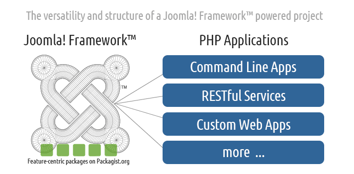
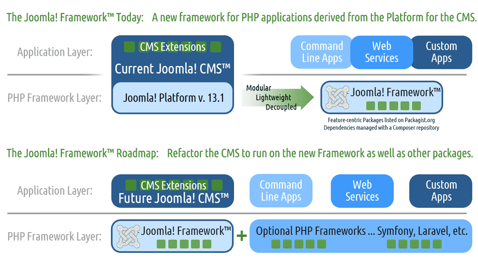

Joomla! Framework
Download & Go
Designed by software developers for software developers. Easy to Adapt. Easy to Extend.
What is the Joomla! Framework?
The Joomla! Framework™ is a new PHP framework (a collection of software libraries/packages) for writing web and command line applications in PHP, without the features and corresponding overhead found in the Joomla! Content Management System (CMS). It provides a structurally sound foundation, which is easy to adapt and easy to extend.
The Joomla! Framework is free and open source software, distributed under the GNU General Public License version 2 or later; and is comprised of code originally developed for the Joomla! CMS™.
The Joomla! Framework should not be confused with the hugely popular Joomla! CMS. It is important to remember that you do not need to install the Joomla! Framework to use the CMS, nor do you need to install the Joomla! CMS to use the Framework.
Getting Started
The new Joomla! Framework is now available to install via Composer and you can find the list of packages on Packagist.org. There are plenty of avenues you can explore to get started on working with the Framework.
For the official docs, check out the README file found in each package. You can also review the Joomla! Framework page on GitHub.
Get the Sample Application
The easiest way to get to know the Joomla! Framework is to start with the sample app.
- Install Composer.
- Download this sample app repository from GitHub.
- Run "composer install".
- View in your browser.
Why build a Joomla! Framework?
Separating the framework from the CMS was a big deal, and in retrospect, a smart decision. By separating the two code bases Joomla!® can now offer the stability the CMS requires while still taking advantage of current and modern trends in PHP development.
What is this first version of the Framework good for?
- Building a RESTful web services platform
- Building both simple and complex command line tools
- Building next generation web applications
A great example is the beta issue tracker for the Joomla! CMS. New
Framework Architecture
The Joomla! Framework has also been designed for maximum flexibility. Breaking the Framework into isolated modular packages allows each package to evolve more easily than if all packages are tied to a single, large package release.
Gone are the days when a PHP framework must offer anything and everything a developer needs to complete a project. The current and widely adopted modern practice is to employ lightweight independent feature-specific packages.
The Framework is distributed with Composer, and as such, allows you to include any other PHP code packages that you can install using Composer. And that's a LOT! Take a look at Packagist.org to see the kind and quality of code which becomes available when using Composer for dependency management.
What does the Joomla! Framework mean for you?
Whether you are a Joomla! extension developer looking to spread your wings & delve into developing standalone applications or a PHP coder looking for a stable lightweight framework for your next app, the Framework provides benefits for everyone.
I am already developing Extensions for the Joomla! CMS. Why should I consider using the Joomla! Framework?
You have invested significant time & effort in learning the Joomla! way of doing things & writing extensions. You can now apply this same knowledge within a non-CMS environment because the Joomla! Framework maintains a similar set of function, class, and method names.
It's important to keep in mind other situations, such as what happens when you land a project that needs a different type of application. Or when something doesn't really fit into the website or CMS box, or the CMS is simply too much overhead. There may be times when you need a simple tool to migrate data from one Business Intelligence system to another or a lightweight RESTful service to talk to a mobile application. These are all cases when a framework-based application will prove much more beneficial.
These are only a few of the many situations where a framework based solution would work far better than attempting to shoehorn a solution into the Joomla! CMS. The Joomla! Framework allows you to leverage all that Joomla! knowledge to build apps without the overhead of the CMS.
I know PHP already. Why should I use this framework?
If you are a strong coder looking for a lightweight framework that is easy to adapt and extend, you are in the right place.
The Joomla! Framework is available using Composer. This allows you to build projects from the many packages included in the Joomla! Framework as well as packages that best fit your needs from any of the other PHP frameworks that use Composer.
I am a Joomla! CMS User. How will I be affected?
The Joomla! CMS and the Joomla! Framework are currently developed independently and, thus, the Framework's launch will not have an immediate impact for you. However, there are already parts of the Framework integrated into the CMS (e.g. the Dependency Injection package, added in Joomla! 3.2), and more is coming. Expect to see some great extensions made available to you, built using the Framework!
The Joomla! Framework aims at getting the latest in PHP developments and features into Joomla! at the framework level. This allows the CMS to better focus its aims on providing the best features for its end users and staying ahead of the game.
Bottom line, you can rest assured that your favorite CMS will continue to have a strong, up-to-date and robust base that can evolve with the web.
Get Involved
Support
The Joomla! Framework incorporated support in a simple step-by-step process. You can quickly determine the best way to get help by following one of the options below:
First Option: Just Fix it
Developers are encouraged to take an active approach with the Framework, including future updates and development. If you find a problem or bug and can fix the issue directly, then you can fix the issue and submit a pull request against the repository.
Not sure how to get started with submitting a pull request? You can view pull request tutorials in the Joomla! documents site.
Second Option: Report it
If you find an issue in the Framework and cannot fix the issue directly, then the next step is to report the problem. Issues can be reported in the Issues section of the Joomla! Framework's GitHub repository. Submitting an issue here will help everyone track issues in a central location. Please be available to add comments and respond to questions related to your issue as other developers begin assisting in writing code to fix the issue.
More information regarding reporting issues can be found here.
Other Option: Learn it
Perhaps as you're working with the Framework you find a feature or an issue that you are simply unsure about how to use it. In this case, it would not be appropriate to attempt either of the steps listed above. You can take advantage of the Joomla! Framework mailing list where you can get help from other developers.
Be respectful and courteous in the mailing list and you will receive quick helpful feedback to help you better utilize the Framework to its full potential.